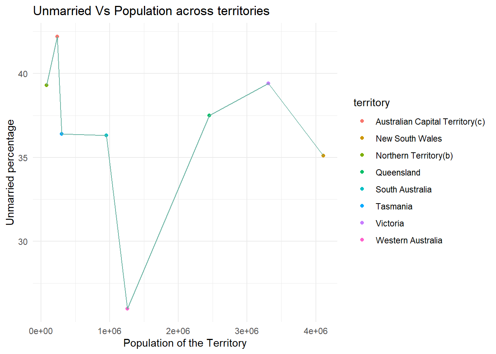
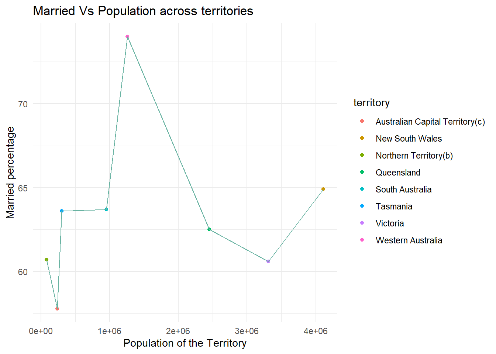

library(tidyverse)
library(ggplot2)
knitr::opts_chunk$set(echo = TRUE, warning=FALSE, message=FALSE)Visualizing Multiple Dimensions
challenge_7
australian_marriage
readr
Visualizing Multiple Dimensions
Challenge Overview
Today’s challenge is to:
- read in a data set, and describe the data set using both words and any supporting information (e.g., tables, etc)
- tidy data (as needed, including sanity checks)
- mutate variables as needed (including sanity checks)
- Recreate at least two graphs from previous exercises, but introduce at least one additional dimension that you omitted before using ggplot functionality (color, shape, line, facet, etc) The goal is not to create unneeded chart ink (Tufte), but to concisely capture variation in additional dimensions that were collapsed in your earlier 2 or 3 dimensional graphs.
- Explain why you choose the specific graph type
- If you haven’t tried in previous weeks, work this week to make your graphs “publication” ready with titles, captions, and pretty axis labels and other viewer-friendly features
Read in data
Read in one (or more) of the following datasets, using the correct R package and command.
- eggs ⭐
- abc_poll ⭐⭐
- australian_marriage ⭐⭐
- hotel_bookings ⭐⭐⭐
- air_bnb ⭐⭐⭐
- us_hh ⭐⭐⭐⭐
- faostat ⭐⭐⭐⭐⭐
library(readr)
aumg_data <- read_csv("_data/australian_marriage_tidy.csv")
View(aumg_data)# Preview the first few rows of the dataset
head(aumg_data)# A tibble: 6 × 4
territory resp count percent
<chr> <chr> <dbl> <dbl>
1 New South Wales yes 2374362 57.8
2 New South Wales no 1736838 42.2
3 Victoria yes 2145629 64.9
4 Victoria no 1161098 35.1
5 Queensland yes 1487060 60.7
6 Queensland no 961015 39.3# Understanding the dimensions of the dataset
dim(aumg_data)[1] 16 4# Identifying the column names of the dataset
colnames(aumg_data)[1] "territory" "resp" "count" "percent" # Identifying the data types of the columns
sapply(aumg_data, class) territory resp count percent
"character" "character" "numeric" "numeric" table(sapply(aumg_data, function(x) typeof(x)))
character double
2 2 sapply(aumg_data, function(x) n_distinct(x))territory resp count percent
8 2 16 16 Briefly describe the data
The dataset gives the information about marriages in different parts of Australia. There are 16 rows and 4 columns. Based on the above, we can infer that there are 2 characters and 2 double datatypes. All the columns are readable for the user. Each observation in the dataset provides information of territory, response(yes/no), count(number of people who responded whether they’re married or not) and the respective percentage.
Tidy Data (as needed)
The data is tidy enough to work on. I would like to mutate the dataset to understand the count of people responded as yes in different territories and also no in different territories separately and understand how the rates of marriages varies across the territories. To plot this, I would want the total population in every territory and the respective percentage across the territories.
married_no <- aggregate(count ~ territory, data = aumg_data, FUN = sum)
married_no territory count
1 Australian Capital Territory(c) 236979
2 New South Wales 4111200
3 Northern Territory(b) 80376
4 Queensland 2448075
5 South Australia 948775
6 Tasmania 301603
7 Victoria 3306727
8 Western Australia 1257499married_no['Resp_no%'] <- subset(aumg_data, resp =="no")['percent']
married_no territory count Resp_no%
1 Australian Capital Territory(c) 236979 42.2
2 New South Wales 4111200 35.1
3 Northern Territory(b) 80376 39.3
4 Queensland 2448075 37.5
5 South Australia 948775 36.3
6 Tasmania 301603 36.4
7 Victoria 3306727 39.4
8 Western Australia 1257499 26.0married_yes <- aggregate(count ~ territory, data = aumg_data, FUN = sum)
married_yes territory count
1 Australian Capital Territory(c) 236979
2 New South Wales 4111200
3 Northern Territory(b) 80376
4 Queensland 2448075
5 South Australia 948775
6 Tasmania 301603
7 Victoria 3306727
8 Western Australia 1257499married_yes['Resp_yes%'] <- subset(aumg_data, resp =="yes")['percent']
married_yes territory count Resp_yes%
1 Australian Capital Territory(c) 236979 57.8
2 New South Wales 4111200 64.9
3 Northern Territory(b) 80376 60.7
4 Queensland 2448075 62.5
5 South Australia 948775 63.7
6 Tasmania 301603 63.6
7 Victoria 3306727 60.6
8 Western Australia 1257499 74.0Visualization with Multiple Dimensions
ggplot(married_no, aes(x=`count`, y= `Resp_no%`, color = `territory`))+
geom_point()+
geom_line(color = "#69b3a2")+
theme_minimal() +
labs(title = "Unmarried Vs Population across territories", y = "Unmarried percentage", x = "Population of the Territory")
ggplot(married_yes, aes(x=`count`, y= `Resp_yes%`, color = `territory`))+
geom_point()+
geom_line(color = "#69b3a2")+
theme_minimal() + labs(title = "Married Vs Population across territories", y = "Married percentage", x = "Population of the Territory")
Based on the above : In the first scenario(Unmarried Vs Population across territories), the percentage of people responded as no is varying from as low as around 7% to 65% and in second scenario(Married Vs Population across territories), the percentage of people responded as yes is varying from around 55% to 75%. In both cases above, Western Australia looks like an outlier at the lower ends and Australian Capital Territory looks like an outlier at the higher end among all the territories.